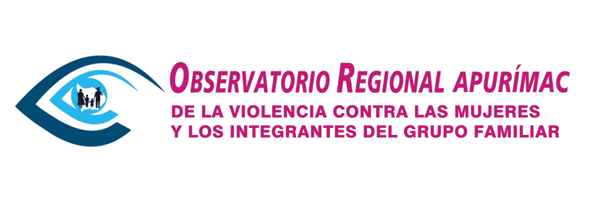

Plataforma regional de informacion, seguimiento territorial y articulacion institucional para fortalecer la respuesta publica.
Av. institucional, Abancay - Apurimac
+51 999 999 999
observatorio@apurimac.gob.pe
Recibe novedades, publicaciones y actualizaciones del observatorio.
Copyright © Gobierno Regional de Apurimac. Todos los derechos reservados.
Demo visual institucional desarrollada para presentacion profesional.